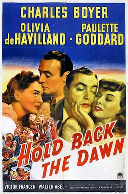

Hold Back the Dawn
14th Academy Awards
(Oscars 1942)
6 Nominations, 0 Awards
| Nominations | ||
|---|---|---|
| Category | Nominees | Result |
| Outstanding Motion Picture | Paramount | Nominated |
| Actress | Olivia de Havilland | Nominated |
| Writing (Screenplay) | Billy Wilder and Charles Brackett | Nominated |
| Cinematography (Black-and-White) | Leo Tover | Nominated |
| Art Direction (Black-and-White) | Hans Dreier, Robert Usher, and Sam Comer | Nominated |
| Music (Music Score of a Dramatic Picture) | Victor Young | Nominated |